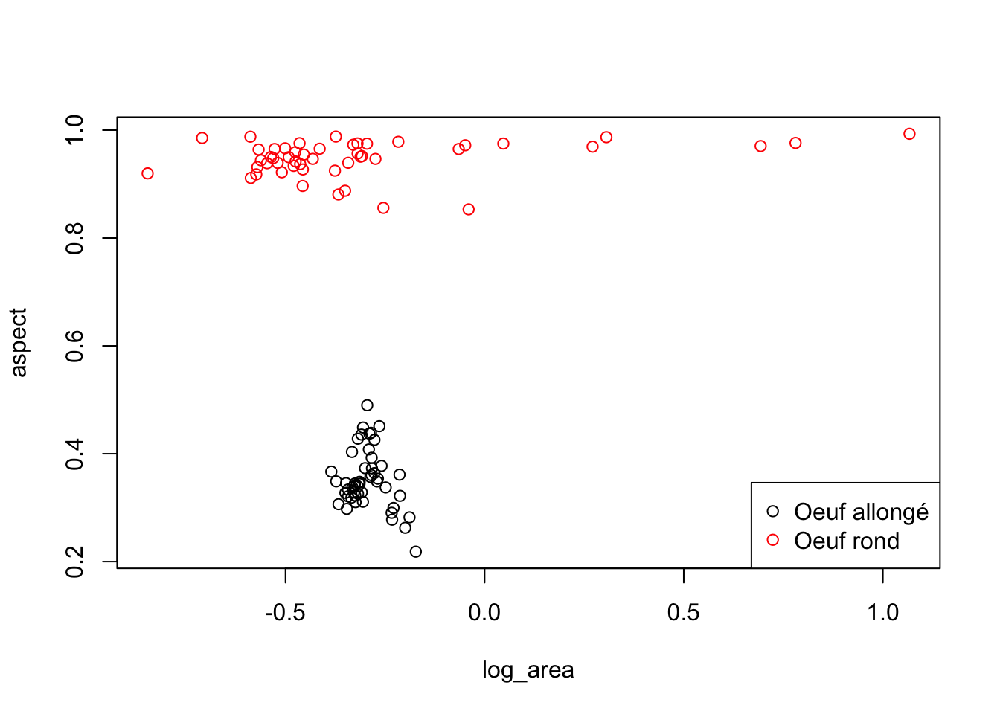
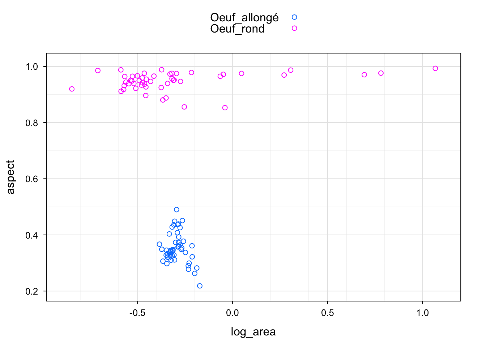
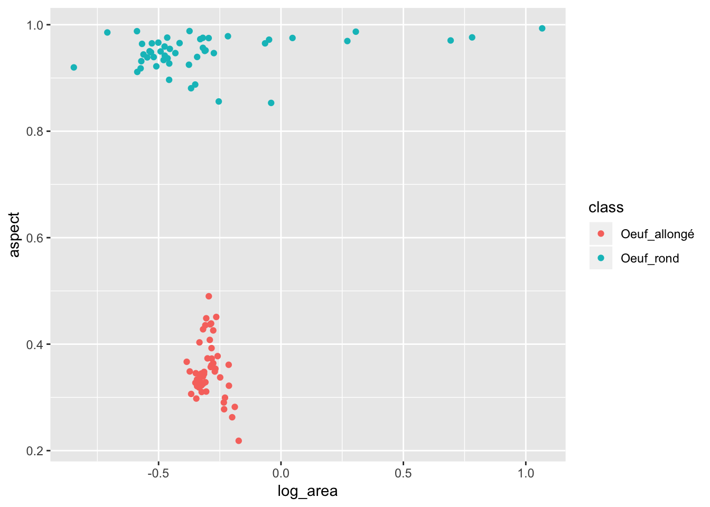
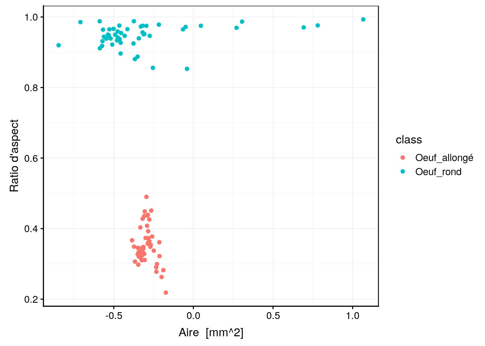
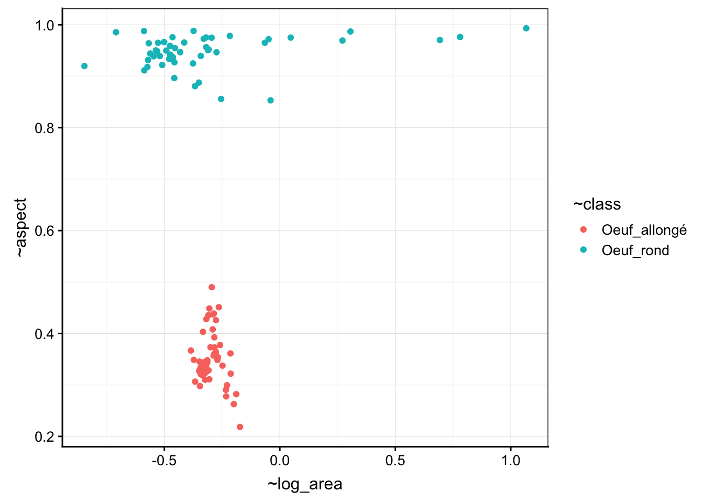

11.6 Syntaxe de R
Dans cette dernière section du module 11, nous revenons sur nos outils logiciels. C’est bien de connaître les techniques de visualisation et d’analyse des données, mais c’est encore mieux de pouvoir les appliquer en pratique, … et pour cela il faut maîtriser un ou plusieurs logiciels. Nous avons utilisé principalement R, via l’interface proposée par RStudio. Nous allons maintenant approfondir quelque peu nos connaissances en R.
Vous avez pu vous rendre compte que R n’est pas qu’un logiciel de science des données. Il comprend également un langage informatique du même nom56 dédié à la manipulation, la visualisation et l’analyse des données.
Les langages informatiques sont, pour la plupart, conçus autour de standards bien définis. Mais R est toujours resté volontairement très libertaire à ce niveau. Comme R permet également de presque tout redéfinir dans son langage, il est apparu au cours du temps différents styles. Ces styles co-existent et co-existeront encore longtemps car ils ont tous des avantages et des inconvénients, ce qui mène à des choix personnels de chaque utilisateur dictés par l’usage qu’il fait de R, ses goûts, son caractère, et comment il a été formé (à quelle “école” il appartient). Nous n’entrerons pas dans les débats stériles autant que passionnés autour de ces questions de styles. Il est cependant utile de comprendre ces différentes approches au moins dans leurs grandes lignes.
Aujourd’hui, on peut distinguer principalement trois styles dans R, résumés dans un aide-mémoire :
La syntaxe de base ou syntaxe dollar est celle héritée du langage S. Elle fait la part belle aux instructions d’indiçage comme
v[i]oudf[i, j], et à l’opérateur dollar$pour extraire, par exemple la variablexdu data framedfà l’aide dedf$x, d’où son nom. Une instruction type en R de base serafun(df$x, df$y). L’objet central est ledata.framequi est conçu pour contenir un tableau de données de type cas par variables.La syntaxe formule qui utilise une formule (objet ressemblant à une équation mathématique et utilisant le tilde
~pour séparer le membre de gauche et le membre de droite). Nous avons utilisé des formules dans le cadre de graphiques réalisés à l’aide dechart()ou pour nos ANOVAs par exemple. Une instruction se présente typiquement commefun(y ~ x, data = df), même si nous préférons dans SciViews inverser les deux arguments et écrirefun(data = df, y ~ x). La syntaxe formule est souvent associée également à undata.frame(l’argumentdata =), même si une liste, untibble(voir ci-dessous) ou tout autre objet similaire peut aussi souvent être utilisé.La syntaxe “tidyverse” qui vise à produire des instruction aussi lisibles que possible (lecture proche d’un langage naturel humain). Cette syntaxe utilise quelques astuces de programmation pour rendre les instructions plus digestes et s’affranchir du
df$xpour pouvoir écrire uniquementxà la place. Elle fait également la part belle au chaînage des instructions (opérateur de “pipe”) que nous avons étudié à la fin du module 5. Une instruction type seradf %>% fun(x, y), même si dans SciViews nous préférons l’opérateur plus explicite%>.%qui donnedf %>.% fun(., x, y). Tidyverse est constitué d’un ensemble de packages R qui se conforme à un style bien défini autour d’une version spéciale de data frame appeléetibble.
Dans le cadre de ce cours, nous utilisons un style propre à SciViews, le style SciViews-R. Il est associé à une série de packages chargés à partir de l’instruction SciViews::R. Ce style tente de rendre l’utilisation de R plus cohérente et plus facile en reprenant le meilleur des trois styles précédents, et en y ajoutant une touche personnelle élaborée pour éliminer autant que possible les erreurs fréquentes observées lors de l’apprentissage ou de l’utilisation de R. Dans la suite de cette section, nous allons comparer quelques instructions équivalentes, mais rédigées dans différents styles pour nous familiariser avec eux et pour comprendre leurs atouts respectifs. Assurez-vous de conserver à proximité l’aide-mémoire sur les différentes syntaxes de R pour vous aider. Mais avant toute chose, un petit complément concernant l’indiçage dans R est nécessaire.
11.6.1 Indiçage dans R
Après l’opérateur particulier <- d’assignation (associer une valeur à un nom dans un langage informatique), les diverses variantes de l’indiçage de vecteurs, matrices et data frames sont caractéristiques de R. Elles sont puissantes, mais nécessitent de s’y attarder un peu pour bien les comprendre.
Les données et les calculs dans R sont vectorisés. Cela signifie que l’élément de base est un vecteur. Un vecteur est un ensemble d’éléments rangés dans un ordre bien défini, et éventuellement nommés. La longueur du vecteur s’obtient avec length(), et il est possible de spécifier un ou plusieurs éléments du vecteur à l’aide de l’opérateur [].
# Un vecteur contenant 4 valeurs numériques nommées a, b, c et d
v <- c(a = 2.6, b = 7.1, c = 4.9, d = 5.0)
# Le second élément du vecteur
v[2]# b
# 7.1# Le premier et le troisième élément
v[c(1, 3)]# a c
# 2.6 4.9# Les 3 premiers éléments avec la séquence 1, 2, 3 issue de 1:3
v[1:3]# a b c
# 2.6 7.1 4.9Nous venons d’indicer notre vecteur v à l’aide de la première forme possible qui consiste à utiliser des entiers positifs pour indiquer la position des éléments que nous souhaitons retenir.
La seconde forme utilise des entiers négatifs pour éliminer les vecteurs aux positions correspondantes.
# Tout le vecteur v, sauf le 2ème élément
v[-2]# a c d
# 2.6 4.9 5.0# Elimination du 2ème et du 3ème élément
v[-(2:3)]# a d
# 2.6 5.0# Elimination du dernier élément
v[-length(v)]# a b c
# 2.6 7.1 4.9La troisième forme d’indiçage nécessite que le vecteur soit nommé, comme c’est le cas pour v. Nous pouvons alors indicer en utilisant des chaînes de caractères correspondant aux noms des différent éléments.
# Elément de v s'appelant 'a'
v['a']# a
# 2.6# Les éléments 'b' et 'd'
v[c('b', 'd')]# b d
# 7.1 5.0Enfin, la quatrième forme d’indiçage utilise un vecteur booléen (TRUE ou FALSE ; on dit logical en R) de même longueur que le vecteur, sinon les valeurs sont recyclée à concurrence de la longueur du vecteur. On ne garde que les éléments correspondant à TRUE.
# Garder le premier et le quatrième élément
v[c(TRUE, FALSE, FALSE, TRUE)]# a d
# 2.6 5.0# Garder le premier et le troisième (recyclage des indices une seconde fois)
v[c(TRUE, FALSE)]# a c
# 2.6 4.9La dernière instruction mérite une petite explication supplémentaire. Le vecteur logical d’indiçage utilisé ne contient que deux éléments alors que le vecteur v qui est indicé en contient quatre. Les valeurs logiques sont alors recyclées comme suit. Lorsqu’on arrive la fin, on reprend au début. Donc, TRUE, on garde le premier, FALSE on élimine le second, et puis… retour au début : TRUE on garde le troisième, FALSE on jette le quatrième, et ainsi de suite si v était plus long. Donc, un indiçage avec c(TRUE, FALSE) permet de ne garder que les éléments d’ordre impair quel que soit la longueur de v, et c(FALSE, TRUE) ne gardera que les éléments d’ordre pair.
La puissance de l’indiçage par valeur booléenne est immense car nous pouvons aussi utiliser une expression qui renvoie de telles valeurs. C’est le cas notamment de toutes les instruction de comparaison (opérateurs égal à ==, différent de !=, plus grand que >, plus petit que <, plus grand ou égal >= ou plus petit ou égal <=). Par exemple pour ne garder que les valeurs plus grandes que 3, on fera :
# Déterminer quel élément est plus grand que 3 dans v
v > 3# a b c d
# FALSE TRUE TRUE TRUE# Utilisation de cette instruction comme indiçage pour filtrer les éléments de v
v[v > 3]# b c d
# 7.1 4.9 5.0Les instructions de comparaison peuvent être combinées entre elles à l’aide des opérateurs “et” (&) ou “ou” (|). Donc, pour récupérer les éléments qui sont plus grands que 3 et plus petits ou égaux à 5, on fera :
v[v > 3 & v <= 5]# c d
# 4.9 5.0Les indiçages fonctionnent aussi pour des objets bi- or multidimensionnels. Dans ce cas, nous utiliserons deux ou plusieurs instructions d’indiçage à l’intérieur des [], séparées par un virgule. Pour un tableau à deux dimensions comme une matrice ou un data frame, le premier élément sélectionne les lignes et le second les colonnes.
df <- tribble(
~x, ~y, ~z,
1, 2, 3,
4, 5, 6
)
df# # A tibble: 2 x 3
# x y z
# <dbl> <dbl> <dbl>
# 1 1 2 3
# 2 4 5 6# Elément à la première ligne, colonnes 2 et 3
df[1, 2:3]# # A tibble: 1 x 2
# y z
# <dbl> <dbl>
# 1 2 3Pour conserver toutes les lignes et/ou toutes les colonnes, il suffit de laisser la position correspondante vide.
# Toute la seconde ligne
df[2, ]# # A tibble: 1 x 3
# x y z
# <dbl> <dbl> <dbl>
# 1 4 5 6# Toute la seconde colonne
df[ , 2]# # A tibble: 2 x 1
# y
# <dbl>
# 1 2
# 2 5# Tout le tableau (pas très utile !)
df[ , ]# # A tibble: 2 x 3
# x y z
# <dbl> <dbl> <dbl>
# 1 1 2 3
# 2 4 5 6Les autres formes d’indiçage fonctionnent aussi.
# Lignes pour lesquelles x est plus grand que 3 et colonnes nommée 'y' et 'z'
df[df$x > 3, c('y', 'z')]# # A tibble: 1 x 2
# y z
# <dbl> <dbl>
# 1 5 6Notez bien que nous n’avons pas écrit df[x > 3, ] mais df[df$x > 3, ]. La première forme n’aurait pas utilisé la variable x du data frame df (notée df$x), mais aurait tenté d’utiliser un vecteur x directement. Ce qui nous amène à l’extraction d’un élément d’un tableau ou d’une liste à l’aide des opérateur [[]] ou $. Pour extraire la colonne y sous forme d’un vecteur de df, nous pourrons faire :
df[[2]]# [1] 2 5df[['y']]# [1] 2 5df$y# [1] 2 5Pour finir, l’indiçage peut aussi être réalisé à la gauche de l’opérateur d’assignation <-. Dans ce cas, la partie concernée du vecteur, de la matrice ou du data frame est remplacée par la ou les valeurs de droite.
# Remplacer la troisième colonne par des nouvelles valeurs
df[ , 3] <- c(-10, -15)
df# # A tibble: 2 x 3
# x y z
# <dbl> <dbl> <dbl>
# 1 1 2 -10
# 2 4 5 -15# Ceci donne le même résultat
df$z <- c(-10, -15)
df# # A tibble: 2 x 3
# x y z
# <dbl> <dbl> <dbl>
# 1 1 2 -10
# 2 4 5 -15Maintenant que nous sommes familiarisés avec les différents modes d’indiçage dans R de base, nous pouvons les comparer à d’autres styles.
A vous de jouer
Afin d’appliquer directement les concepts vus au cours dans ce module, ouvrez RStudio dans votre SciViews Box, puis exécutez l’instruction suivante dans la fenêtre console :
BioDataScience::run("11b_syntaxr")11.6.2 Comparaison de styles
Nous allons réaliser quelques opérations simples sur un jeu de données cas par variables. Nous allons créer un tableau de contingence à une entrée, sélectionner des cas et restreindre les variables du tableau, calculer une nouvelle variable, pour finir avec une représentation graphique simple. Nous ferons le même travail en utilisant les différents styles de R à des fins de comparaison.
Prenons le jeu de données zooplankton qui contient 19 mesures (variables numériques) effectuées sur des images de zooplancton, ainsi que le groupe taxonomique auquel les organismes appartiennent (variable facteur class). Nous avons toujours utilisé la fonction read() pour charger ce type de données. Cette fonction fait partie de SciViews::R.
SciViews::R
zoo <- read("zooplankton", package = "data.io", lang = "FR")
skimr::skim(zoo)# Skim summary statistics
# n obs: 1262
# n variables: 20
#
# ── Variable type:factor ────────────────────────────────────────────────────────────────────────
# variable missing complete n n_unique
# class 0 1262 1262 17
# top_counts ordered
# Cal: 288, Poe: 158, Déc: 126, Mal: 121 FALSE
#
# ── Variable type:numeric ───────────────────────────────────────────────────────────────────────
# variable missing complete n mean sd p0 p25 p50
# area 0 1262 1262 0.72 1.74 0.06 0.23 0.35
# aspect 0 1262 1262 0.54 0.24 0.059 0.35 0.52
# circularity 0 1262 1262 0.31 0.24 0.023 0.12 0.22
# compactness 0 1262 1262 6.24 5.43 1.1 2.35 4.46
# density 0 1262 1262 0.13 0.25 0.001 0.041 0.07
# ecd 0 1262 1262 0.81 0.51 0.28 0.54 0.67
# elongation 0 1262 1262 17.44 17.17 1 5.19 11.93
# feret 0 1262 1262 1.81 1.55 0.31 0.93 1.34
# major 0 1262 1262 1.33 1.28 0.29 0.74 0.91
# max 0 1262 1262 0.7 0.22 0.068 0.54 0.68
# mean 0 1262 1262 0.21 0.12 0.016 0.13 0.2
# min 0 1262 1262 0.006 0.0044 0.004 0.004 0.004
# minor 0 1262 1262 0.56 0.37 0.18 0.36 0.48
# mode 0 1262 1262 0.073 0.2 0.004 0.012 0.02
# perimeter 0 1262 1262 6.45 6.31 0.95 2.82 4.33
# range 0 1262 1262 0.69 0.22 0.064 0.53 0.68
# size 0 1262 1262 0.94 0.73 0.28 0.59 0.71
# std_dev 0 1262 1262 0.17 0.073 0.013 0.12 0.17
# transparency 0 1262 1262 0.089 0.11 0 0.011 0.052
# p75 p100 hist
# 0.61 41.27 ▇▁▁▁▁▁▁▁
# 0.74 1 ▃▅▇▇▆▆▆▅
# 0.43 0.91 ▇▆▃▃▂▁▂▂
# 8.37 43.41 ▇▃▁▁▁▁▁▁
# 0.15 5.74 ▇▁▁▁▁▁▁▁
# 0.88 7.25 ▇▁▁▁▁▁▁▁
# 24.25 134.36 ▇▃▁▁▁▁▁▁
# 2.05 10.59 ▇▃▁▁▁▁▁▁
# 1.38 10.01 ▇▂▁▁▁▁▁▁
# 0.89 1.02 ▁▁▃▅▆▆▃▇
# 0.27 0.78 ▅▇▇▂▁▁▁▁
# 0.008 0.032 ▇▂▁▁▁▁▁▁
# 0.63 5.91 ▇▁▁▁▁▁▁▁
# 0.032 1.02 ▇▁▁▁▁▁▁▁
# 7.81 89.26 ▇▁▁▁▁▁▁▁
# 0.88 1.02 ▁▁▃▆▆▆▃▇
# 1.02 7.4 ▇▁▁▁▁▁▁▁
# 0.22 0.42 ▂▅▇▇▅▂▁▁
# 0.12 0.54 ▇▃▂▁▁▁▁▁Voici comment se distribuent les organismes en fonction de class, en utilisant la syntaxe de base :
table(zoo$class)#
# Annélide Appendiculaire Calanoïde Chaetognathe
# 50 36 288 51
# Cirripède Cladocère Cnidaire Cyclopoïde
# 22 50 22 50
# Décapode Oeuf_allongé Oeuf_rond Poisson
# 126 50 49 50
# Gastéropode Harpacticoïde Malacostracé Poecilostomatoïde
# 50 39 121 158
# Protiste
# 50La fonction table() crée un objet du même nom qui se comporte de manière différente d’un data frame. Ainsi, l’impression de l’objet se présente comme un ensemble de valeurs nommées par le niveau dénombré pour un tableau de contingence à une seule entrée.
Si vous voulez réaliser la même opération à l’aide d’une formule, vous pouvez utiliser la fonction tally() depuis le package mosaic. Vous pouvez charger ce package à l’aide de l’instruction library(mosaic), et ensuite utiliser tally() comme si de rien était, ou alors vous spécifiez complètement la fonction à l’aide de mosaic::tally() (littéralement, “la fonction tally du package mosaic”). Cette dernière approche est favorisée par SciViews-R car elle permet de comprendre immédiatement d’où vient la fonction et d’éviter aussi d’appeler malencontreusement une fonction du même nom qui serait définie dans un autre package.
#mosaic::tally(data = zoo, ~ class)Tidyverse favorise l’assemblage d’un petit nombre de fonction (des “verbes”) pour obtenir les mêmes résultats que des fonctions plus spécialisées dans les autres styles. Ainsi, ses instructions seront souvent plus verbeuses (inconvénient), mais aussi beaucoup plus lisibles et compréhensibles par un humain (immense avantage). La réalisation d’un tableau de contingence consiste en fait à regrouper les données en fonction de class, et ensuite à compter (contingenter) les observations dans chaque classe. Nous pouvons écrire une instruction qui réalise exactement ce traitement de manière explicite (sachant que la fonction n() sert à dénombrer) :
zoo %>%
group_by(class) %>%
summarise(n())# # A tibble: 17 x 2
# class `n()`
# <fct> <int>
# 1 Annélide 50
# 2 Appendiculaire 36
# 3 Calanoïde 288
# 4 Chaetognathe 51
# 5 Cirripède 22
# 6 Cladocère 50
# 7 Cnidaire 22
# 8 Cyclopoïde 50
# 9 Décapode 126
# 10 Oeuf_allongé 50
# 11 Oeuf_rond 49
# 12 Poisson 50
# 13 Gastéropode 50
# 14 Harpacticoïde 39
# 15 Malacostracé 121
# 16 Poecilostomatoïde 158
# 17 Protiste 50Nous obtenons un objet tibble, et non pas un objet spécifique au traitement réalisé. C’est dans la philosophie de tidyverse que d’utiliser et réutiliser autant que possible un tibble qui permet de contenir des données “bien rangées” (ou “tidy data” en anglais, d’où le nom de ce style, tidyverse pour “univers bien rangé”).
Comme contingenter des observations est une opération fréquente, il existe exceptionnellement une fonction dédiée qui fait le travail en une seule opération : count().
count(zoo, class)# # A tibble: 17 x 2
# class n
# <fct> <int>
# 1 Annélide 50
# 2 Appendiculaire 36
# 3 Calanoïde 288
# 4 Chaetognathe 51
# 5 Cirripède 22
# 6 Cladocère 50
# 7 Cnidaire 22
# 8 Cyclopoïde 50
# 9 Décapode 126
# 10 Oeuf_allongé 50
# 11 Oeuf_rond 49
# 12 Poisson 50
# 13 Gastéropode 50
# 14 Harpacticoïde 39
# 15 Malacostracé 121
# 16 Poecilostomatoïde 158
# 17 Protiste 50Le résultat est le même. Comparons maintenant la fonction table() de base et count() de tidyverse du point de vue des arguments. table() prend un vecteur comme argument. A nous de l’extraire du data frame à l’aide de zoo$class, ce qui donne table(zoo$class). Par contre, count() comme toute fonction tidyverse qui se respecte, prend comme premier argument un tibble ou un data.frame, bref un tableau cas par variables. C’est ensuite au niveau du second argument que l’on spécifie la variable que nous souhaitons utiliser à partir de ce tableau. Ici, plus besoin d’indiquer que c’est une variable qui vient du tableau zoo, car count() le sait déjà. Bien que ce ne soit pas évident au premier cou d’œil, count() ne respecte pas la syntaxe de base de R et évalue class de manière particulière57. Au final, l’appel à table() nécessite de comprendre ce que fait l’opérateur $. Au contraire, l’instruction tidyverse count(zoo, class) se lit et se comprend très bien presque comme si c’était écrit en anglais. Vous lisez en effet “compte dans zoo la classe” (avantage), mais le coût en est une évaluation non standard de ses arguments (inconvénient qui ne peut pas apparaître à ce stade mais que vous constaterez plus tard quand vous ferez des choses plus évoluées avec ces instructions).
Bien. Admettons maintenant que nous voulons représenter la forme (ratio d’aspect, rapport largeur / longueur) des œufs en fonction de leur taille sur un graphique (en utilisant les variables aspect et area) présents dans notre échantillon de zooplancton. Deux niveaux de la variable class les contiennent : Oeuf_allongé et Oeuf_rond. Nous voulons donc filtrer les données du tableau zoo pour ne garder que ces deux catégories, et éventuellement, nous voulons aussi restreindre le tableau aux trois variables aspect, area et class puisque nous n’avons pas besoin des autres variables. En R de base cela peut se faire en une seule étape à l’aide de l’opérateur d’indiçage [] comme nous avons vu plus haut.
zoo2 <- zoo[zoo$class == "Oeuf_allongé" | zoo$class == "Oeuf_rond",
c("aspect", "area", "class")]
zoo2# # A tibble: 99 x 3
# aspect area class
# <dbl> <dbl> <fct>
# 1 0.965 0.385 Oeuf_rond
# 2 0.976 6.04 Oeuf_rond
# 3 0.964 0.271 Oeuf_rond
# 4 0.911 0.259 Oeuf_rond
# 5 0.950 0.322 Oeuf_rond
# 6 0.959 0.335 Oeuf_rond
# 7 0.976 0.343 Oeuf_rond
# 8 0.975 1.11 Oeuf_rond
# 9 0.449 0.495 Oeuf_allongé
# 10 0.987 2.02 Oeuf_rond
# # … with 89 more rowsEn tidyverse, les deux opérations (filtrage des lignes et sélection des variables en colonnes) restent deux opération successives distinctes dans le code. Notez au passage que nous repassons à l’opérateur de chaînage %>.% de SciViews-R que nous avons l’habitude d’utiliser à la place de l’opérateur correspondant de tidyverse %>%.
zoo %>.%
filter(., class == "Oeuf_allongé" | class == "Oeuf_rond") %>.%
select(., aspect, area, class) ->
zoo2
zoo2# # A tibble: 99 x 3
# aspect area class
# <dbl> <dbl> <fct>
# 1 0.965 0.385 Oeuf_rond
# 2 0.976 6.04 Oeuf_rond
# 3 0.964 0.271 Oeuf_rond
# 4 0.911 0.259 Oeuf_rond
# 5 0.950 0.322 Oeuf_rond
# 6 0.959 0.335 Oeuf_rond
# 7 0.976 0.343 Oeuf_rond
# 8 0.975 1.11 Oeuf_rond
# 9 0.449 0.495 Oeuf_allongé
# 10 0.987 2.02 Oeuf_rond
# # … with 89 more rowsLe résultat est le même, mais la syntaxe est très différente. Notez que les variables dans la syntaxe de base sont complètement qualifiées (zoo$class), ce qui nécessite de répéter plusieurs fois le nom du jeu de données zoo (inconvénient) mais lève toute ambiguïté (avantage). La version de tidyverse est plus “propre” (avantage), mais cela implique d’utiliser une évaluation non standard de class qui n’est pas une variable existante dans l’environnement où le code est évalué (inconvénient). La sélection des variables est également différente. Dans R de base, des chaînes de caractères doivent être compilées dans un vecteur d’indiçage à l’aide de c(), alors que select() de tidyverse permet de spécifier simplement les noms des variables sans autres fioritures (mais cela doit être évalué de manière non standard, encore une fois).
Pour calculer une nouvelle variable, par exemple le logarithme en base 10 de l’aire dans log_area, nous ferons comme ceci en R de base :
zoo2$log_area <- log10(zoo2$area)
head(zoo2)# # A tibble: 6 x 4
# aspect area class log_area
# <dbl> <dbl> <fct> <dbl>
# 1 0.965 0.385 Oeuf_rond -0.414
# 2 0.976 6.04 Oeuf_rond 0.781
# 3 0.964 0.271 Oeuf_rond -0.568
# 4 0.911 0.259 Oeuf_rond -0.587
# 5 0.950 0.322 Oeuf_rond -0.492
# 6 0.959 0.335 Oeuf_rond -0.475Avec tidyverse, nous savons déjà que mutate() est le verbe à employer pour cette opération.
zoo2 <- mutate(zoo2, log_area = log10(area))
head(zoo2)# # A tibble: 6 x 4
# aspect area class log_area
# <dbl> <dbl> <fct> <dbl>
# 1 0.965 0.385 Oeuf_rond -0.414
# 2 0.976 6.04 Oeuf_rond 0.781
# 3 0.964 0.271 Oeuf_rond -0.568
# 4 0.911 0.259 Oeuf_rond -0.587
# 5 0.950 0.322 Oeuf_rond -0.492
# 6 0.959 0.335 Oeuf_rond -0.475La syntaxe de tidyverse se lit mieux et est plus propre (avantage), mais elle nécessite pour y arriver une évaluation non standard de area, ce qui est un inconvénient par rapport à la snytaxe R de base.
Pour finir, revenons sur les différents moteurs graphiques pour faire un nuage de points en utilisant différents styles. Une petite précaution supplémentaire est nécessaire. Pour class, nous devons préalablement laisser tomber les niveaux non utilisés à l’aide de droplevels().
# Tous les niveaux sont toujours là
levels(zoo2$class)# [1] "Annélide" "Appendiculaire" "Calanoïde"
# [4] "Chaetognathe" "Cirripède" "Cladocère"
# [7] "Cnidaire" "Cyclopoïde" "Décapode"
# [10] "Oeuf_allongé" "Oeuf_rond" "Poisson"
# [13] "Gastéropode" "Harpacticoïde" "Malacostracé"
# [16] "Poecilostomatoïde" "Protiste"# Ne retenir que les niveaux relatifs aux oeufs
zoo2$class <- droplevels(zoo2$class)
# C'est mieux
levels(zoo2$class)# [1] "Oeuf_allongé" "Oeuf_rond"Voici un graphe de base… avec également la syntaxe de base :
plot(zoo2$log_area, zoo2$aspect, col = zoo2$class)
legend("bottomright", legend = c("Oeuf allongé", "Oeuf rond"), col = 1:2, pch = 1)
Le même graphique, mais en utilisant l’interface formule alternative avec plot() :
plot(data = zoo2, aspect ~ log_area, col = class)
legend("bottomright", legend = c("Oeuf allongé", "Oeuf rond"), col = 1:2, pch = 1)
L’interface formule est également employée avec le moteur lattice via la fonction xyplot(). Ici, nous utilisons la version chart() en appelant chart$xyplot().
chart$xyplot(data = zoo2, aspect ~ log_area, groups = zoo2$class, auto.key = TRUE)
Dans tidyverse, c’est le moteur graphique ggplot2 qui est utilisé, avec sa syntaxe propre :
ggplot(data = zoo2, aes(x = log_area, y = aspect, col = class)) +
geom_point()
Dans SciViews-R, chart() utilise aussi par défaut le moteur graphique ggplot2, mais il est plus flexible et permet soit d’utiliser aes() comme ggplot(), soit une interface formule élargie (c’est-à-dire qu’il est possible d’y inclure d’autres “aesthetics” à l’aide des opérateurs %aes=%) :
# chart() et aes()
chart(data = zoo2, aes(x = log_area, y = aspect, col = class)) +
geom_point()
# chart() avec une formule élargie
chart(data = zoo2, aspect ~ log_area %col=% class) +
geom_point()
Il y aurait encore beaucoup à dire sur les différents styles de syntaxe dans R, mais nous venons de discuter les éléments essentiels. SciViews-R propose d’utiliser un ensemble cohérent d’instructions qui est soigneusement choisi pour rendre l’utilisation de R plus facile (sur base de nos observations des difficultés et erreurs d’apprentissage principales). Il se base sur tidyverse avec une pincée de R de base et une bonne dose de formules là où elles se montrent utiles. Des fonctions et des opérateurs originaux sont ajoutés dans le but d’homogénéiser et/ou clarifier la syntaxe.
De votre côté, vous êtes libre d’utiliser le style que vous préférez. si la curiosité vous pousse à essayer autre chose et à adopter un autre style que SciViews-R, nous en serons ravis. R est ouvert, il offre beaucoup et c’est à vous maintenant de créer votre propre boite à outils taillée réellement à votre mesure !
Pour finir, il parait que les belges sont forts en auto-dérision. La caricature suivante devrait vous faire sourire :

Pour en savoir plus
Swirl vous permet d’apprendre la syntaxe de base de R de manière conviviale et interactive. Le site R maintient une page de documents et tutoriaux ici (descendez jusqu’à la section concernant les documents en français si vous préférez travailler dans cette langue). Enfin, les manuels de R sont un peu techniques, mais ils décrivent dans le détail la syntaxe de base.
Mosaic est une initiative américaine qui vise en partie un objectif assez similaire à celui de SciViews-R : homogénéiser l’interface de R et en faciliter l’apprentissage. A student’s guide to R est un ouvrage en ligne qui vous apprendra à utiliser R selon le style mosaic qui fait la part belle à l’interface formule.
La littérature concernant le tidyverse est abondante. Commencez par le site web qui pointe également vers R for Data Science que nous conseillons comme première source pour apprendre R à la sauce tidyverse (une version en français au format papier est également disponible). Voyez ensuite la page “learn the tidyverse” pour divers ouvrages et autres matériels d’apprentissage.
Historiquement, ce langage s’appelait S à l’origine dans les années 1970 alors qu’il a été inventé par John Chambers et ses collègues aux laboratoires Bell. R est une implémentation open source de S écrite dans les années 1990 par Ross Ihaka et Robert Gentleman. Ensuite R a pris de l’importance à tel point qu’on parle maintenant du langage R (sachant bien qu’il s’agit d’un dialecte du langage S).↩
Cette évaluation particulière s’appelle le “tidyeval”. Son explication est hors de propos dans cette introduction à la science des données mais si vous êtes curieux, vous pouvez toujours lire ceci.↩